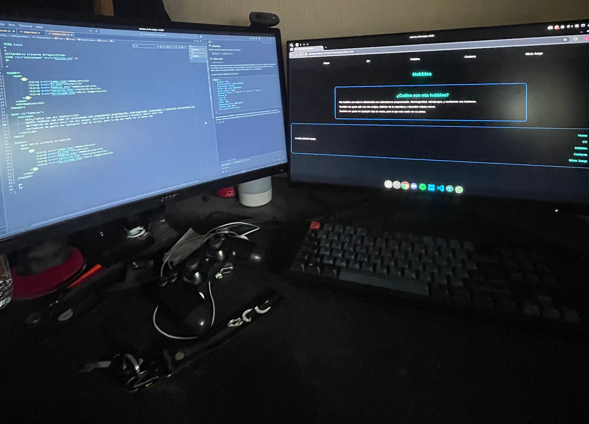
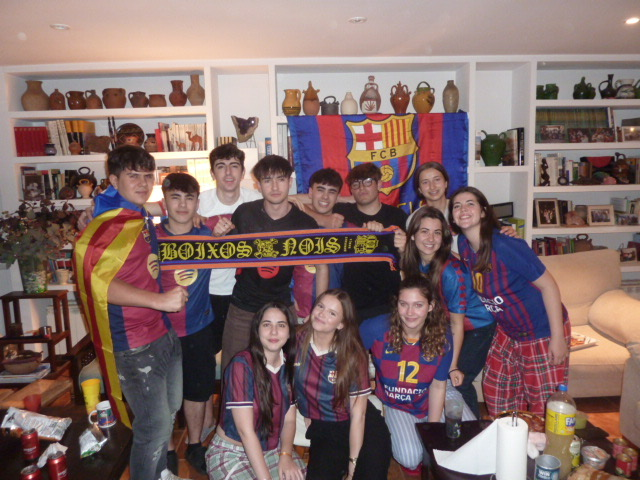
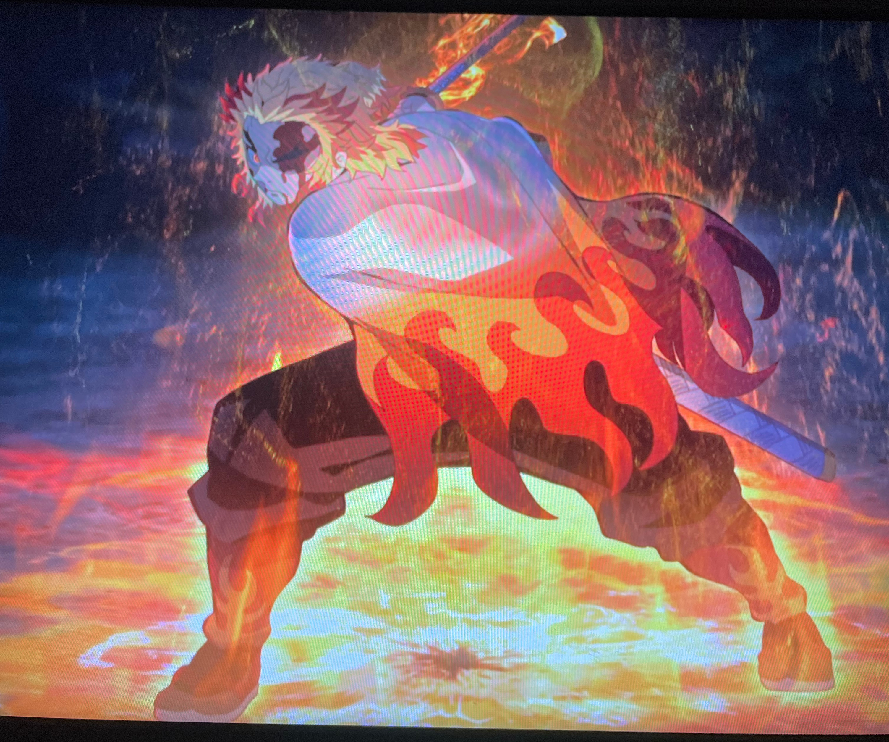

¿Cuáles son mis hobbies?
Mis hobbies son todo lo relacionado con ordenadores: programación, ciberseguridad, videojuegos, y cacharrear con hardware.
También me gusta salir con mis amigos, disfrutar de la naturaleza y descubrir música nueva.
Tambien me gusta ver qualquier tipo de series, pero lo que mas suelo ver es anime.
